kristy martinez by kristy martinez
I'M PLANNING TO COMPLETELY REDO MY WEBSITE OVER MY FEBRUARY
BREAK SO IF YOU'RE READING THIS, I PROMISE YOU MY WEBSITE ISN'T ALWAYS THIS UGLY
hi........ my name is kristy martinez and i'm a high school senior in long island, NY. this website mainly serves as my personal blog and as a way to present what i like to the internet. i have been planning what to show to the world since about 2 years ago (sophomore year). right now, i will be taking those plans and trying my best to bring them to this website. as i grow as a person in age and maturity, this website will grow as well. even though my love for computer science is relatively new compared to those on the internet, this website will also contain the projects i complete as i go farther in my career. **PS, this website is a mess currently (most like my life - i finally have time to work on college
applications because isaac is home) but please explore it as you like :) this website
will evolve with me and it will become MORE COLORFUL!!!

*i make most of the gifs and doodles on this website using procreate
:)*

*update log*
1/30/22: i decided to start doing an update log cause i might have
sorta deleted a good portion of what i was working on before by accident--i really
hate how there's no undo tool on repl :( but basically i'm trying to add a starry
night background but everytime i follow a tutorial it never works so please bare with
me
2/2/22: hiii anyone reading this i'm gonna start re-adding the stuff i removed either
today or tomorrow or friday. it will probably look ugly at first, but please bare with
me.